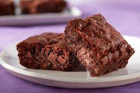

Chocolate-Brownie

Ingredients
- 200 g butter
- 300 g sugar
- 2 eggs
- 1 egg yolk
- 120 g plain flour
- 50 g cocoa powder
- ½ tsp baking powder
- ½ tsp salt
- 150 g pecans, roughly chopped
- 150 g chocolate, roughly chopped
Steps
- Preheat the oven to 170°C.
- Melt butter and 100 g of sugar in a saucepan at low heat.
- Whisk remaining sugar with eggs and egg yolk in a separate bowl.
- Slowly add the warm butter mixture into the egg mixture little by little and mix until completely combined.
- Sift flour, cocoa powder, baking powder and salt into the mixture with half of the pecans and chocolate. Fold the mixture with a rubber spatula until just combined.
- Line a 22 x 22 cm baking tray with baking paper and pour the batter into it. Smooth the surface and top with rest of the chocolate and pecans.
- Bake for 25–30 minutes. The surface should be shiny and a bit cracked – and the cake slightly soft in the middle and not completely baked.
- Let the brownie cool in the tin on a baking rack be before cutting it.
that's it! you're brownie is ready...bon appétit